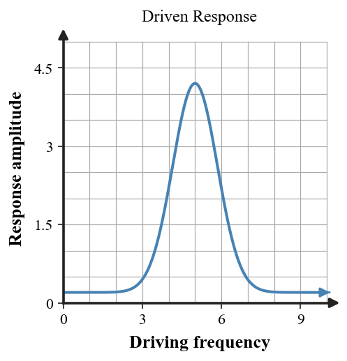
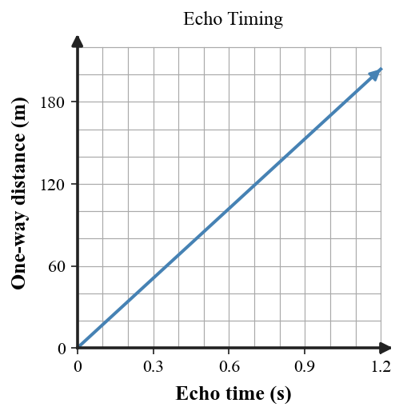

Practice focus: Explain echoes, refraction of sound, forced vibration, natural frequency, and resonance in real-world situations.
Quick check at the echo-and-resonance lab: Write a clear one-sentence meaning for refraction as a change in wave direction associated with a change in wave speed. Keep the response brief.
Quick check at the echo-and-resonance lab: Sort a swing pushed at the right rhythm as an example of resonance or reflection. Keep the response brief.
Quick check at the echo-and-resonance lab: Write a clear one-sentence meaning for reflection of sound in words. Keep the response brief.
Quick check at the echo-and-resonance lab: Sort a canyon echo as reflection, refraction, or resonance. Keep the response brief.
Quick check at the echo-and-resonance lab: Write a clear one-sentence meaning for natural frequency. Keep the response brief.
Quick check at the echo-and-resonance lab: Supply the physics term for the familiar sound phenomenon caused by reflected sound returning to a listener. Keep the response brief.
Quick check at the echo-and-resonance lab: Read the resonance-response graph to identify the driving-frequency region with the largest response. Keep the response brief.

Quick check at the echo-and-resonance lab: Write a clear one-sentence meaning for resonance. Keep the response brief.
Quick check at the echo-and-resonance lab: Decide whether echo time includes a one-way trip or a round trip. Keep the response brief.
Quick check at the echo-and-resonance lab: Sort sound bending through air layers where sound speed differs as reflection or refraction. Keep the response brief.
Quick check at the echo-and-resonance lab: Supply the physics term for the vibration caused in one object by a periodic force from another object: forced vibration or free fall. Keep the response brief.
Quick check at the echo-and-resonance lab: Give the condition that produces a large resonant response: driving frequency far from or near the natural frequency. Keep the response brief.
Data/diagram station — echo-and-resonance lab: Read the echo-distance graph to determine the approximate wall distance for an echo time of 0.8 s. Show the relationship or reasoning you used.

Data/diagram station — echo-and-resonance lab: A swing is pushed once each time it returns to the same part of its cycle. Explain why this timing can increase amplitude. Show the relationship or reasoning you used.
Data/diagram station — echo-and-resonance lab: A clap echo returns after 0.60 s. Use $v_{sound}=340\text{ m/s}$ and $d=\frac{vt}{2}$ to find the wall distance. Show the relationship or reasoning you used.
Data/diagram station — echo-and-resonance lab: A room has hard walls and strong echoes. Identify whether increasing absorption should increase or decrease reflected sound. Show the relationship or reasoning you used.
Data/diagram station — echo-and-resonance lab: Examine two echoes: A returns in 0.30 s and B returns in 0.90 s. Calculate both surface distances and identify which is farther. Show the relationship or reasoning you used.
Data/diagram station — echo-and-resonance lab: A hiker hears an echo 1.2 s after shouting. Calculate the distance to the reflecting cliff and explain the factor of 2. Show the relationship or reasoning you used.
Data/diagram station — echo-and-resonance lab: A sound ray changes direction across two air regions. Identify the wave behavior and state what must have changed between the regions. Show the relationship or reasoning you used.
Data/diagram station — echo-and-resonance lab: A sound wave bends when it enters a region where its speed changes. Use the diagram to describe how the path changes at the boundary. Show the relationship or reasoning you used.
Data/diagram station — echo-and-resonance lab: A sonar-style pulse returns after 2.0 s in water where sound speed is 1500 m/s. Determine the one-way distance to the object. Show the relationship or reasoning you used.
Data/diagram station — echo-and-resonance lab: Examine a drive frequency far from resonance with one near resonance using the graph. State which gives the larger response. Show the relationship or reasoning you used.
Data/diagram station — echo-and-resonance lab: A lab partner multiplies 340 m/s by 0.50 s and calls the result the wall distance. Identify the round-trip error and find the correct wall distance. Show the relationship or reasoning you used.
Data/diagram station — echo-and-resonance lab: A tuning fork makes a nearby object vibrate weakly at most frequencies but strongly at one frequency. Identify the likely natural frequency from this evidence. Show the relationship or reasoning you used.
Reasoning task — echo-and-resonance lab: A lab partner says resonance happens whenever any object is shaken. Critique the statement and write a more precise explanation involving frequency matching. Support the explanation with at least two connected physics ideas.
Reasoning task — echo-and-resonance lab: A lab partner hears a delayed echo and says, “The sound slowed down on the way back.” Explain a better reason for the delay using travel distance and reflection. Support the explanation with at least two connected physics ideas.
Reasoning task — echo-and-resonance lab: A sound wave travels from one air layer into another where its speed differs. Explain how this can lead to refraction and why the path can bend. Support the explanation with at least two connected physics ideas.
Reasoning task — echo-and-resonance lab: Describe in physics terms why pushing a swing at the right time can make its amplitude grow much more than random pushes. Use driving frequency and natural frequency. Support the explanation with at least two connected physics ideas.
Extended model task — echo-and-resonance lab: A school wants to reduce strong echoes in a gymnasium. Propose at least two design changes and defend which should help most using reflection, absorption, distance, and the need to preserve useful sound. Make the reasoning explicit enough that another student could follow it.
Extended model task — echo-and-resonance lab: Design a short investigation that demonstrates resonance. Include materials, what variable you change, what response you measure, what pattern counts as evidence, and one misconception the investigation addresses. Make the reasoning explicit enough that another student could follow it.